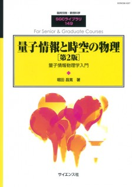

量子情報や量子哲学
最近は情報理論の観点からみた量子力学の話題が活発になってきています。
そのような方面のやさしい教科書はまだ不足しており、
どこから学んだらいいのかという声も良く聞こえてきます。
一方、この方面の研究者の間に先が見えぬ不安があるのも感じ取れます。
そういう現在進行形の分野について、
私のところに流れてきている情報を、
書籍紹介という形で共有したいと思います。
あまり簡単ではない本も含めて紹介させていただきます。
書店入り口へ
量子コンピュータ・量子情報理論

量子コンピュータと量子通信 I |
(原著初版 2000年) 量子コンピュータや量子情報をちゃんと学びたいならまずはこれを読めと言われるような古くからある有名な教科書です。 実際の本のタイトルよりも、著者らの名前から「ニールセン・チャン」と呼ばれて親しまれています。 元々は一冊の本ですが日本語版では3冊に分かれました。 第1巻「量子力学とコンピュータ科学」 第2巻「量子コンピュータとアルゴリズム」 第3巻「量子通信・情報処理と誤り訂正」 原著のタイトルは「Quantum Computation and Quantum Information」です。 「量子計算と量子情報」？ |
|

量子情報と時空の物理[第2版]【電子版】 |
(初版 2014年) (第2版 2019年) 量子情報と物理学との関係を論じたかなり専門的な本です。 量子エネルギーテレポーテーションなどの話題を含みます。 既に紙の本は売り切れであり、雑誌扱いの書籍ですから再販は見込めません。 現在はサイエンス社のサイトからPDF版（パスワード付き）として購入することができます。 リンク先はPDF版の販売ページです。 |

今度こそわかる量子コンピューター |
(2015年) 軽い気持ちで学ぶならまずはこのあたりが適当だろうと思います。 |

量子コンピュータ入門（第2版） |
(初版 2008年) (第2版 2016年） もう少ししっかりと学ぼうとするならこのあたりが適当だろうと思います。 |

量子情報科学入門 |
(2012年) 評判が良いので置いておきます。 |

観測に基づく量子計算 |
(2017年) 新しいタイプの計算方式「観測型量子計算」の解説です。 主流となってきている量子ゲートによる量子計算の他にも、 観測を実行することによって同等の計算を行うことが出来るらしいのです。 優位性などは私には分かりませんが、そういう話題もあるのだということで。 |

量子計算理論――量子コンピュータの原理 |
(2017年) 評判が良いので置いておきます。 後半がかなり難しいですが、「観測型量子計算」などにも触れております。 |
圏論的量子力学
そんな分野があるのかと驚いており、私にはまだ分かりません

圏論的量子力学入門 |
(原著 2017年) この分野の創始者によって書かれた教科書の翻訳です。 かなり高価ですが、900ページを超えているのでそんなものでしょう。 おそらく最近の量子情報理論の進展と無関係ではないのでしょう。 圏論との親和性が高いというところに何かあるのではと思えてしまいます。 |

圏論的量子力学 |
(原著 2020年) 公開されているページを少し覗いた印象では数学的な絡みなども書かれているようで大変そうなのではないかと思えます。 |

図式と操作的確率論による量子論 |
(2022年) 圏論の細かい話には踏み込まず、実際的な図を使った計算方法について詳しく分かりやすく説明してくれています。 おそらくこの本が一番入門に適しているのではないかと思えます。 |
量子系の哲学
こめんと

量子力学の多世界解釈――なぜあなたは無数に存在するのか |
こめんと |

量子力学の解釈問題――実験が示唆する「多世界」の実在 |
こめんと |

量子力学の反常識と素粒子の自由意志 |
タイトルがトンデモ本っぽいのですが、とてもまじめな一般向けの解説本です。 縦書きの本で、数式をほとんど使っていないので気軽に読めます。 図はたくさん使われています。 量子もつれから分かる実在性、局在性などが納得しやすい形で説明されています。 |

量子力学の諸解釈――パラドクスをいかにして解消するか |
こめんと |

量子と情報――量子の実在と不確定性原理 |
こめんと |

量子という謎――量子力学の哲学入門 |
こめんと |

量子力学は、本当は量子の話ではない――「奇妙な」解釈からの脱却を探る |
こめんと |

量子の不可解な偶然――非局所性の本質と量子情報科学への応用 |
こめんと |

実在とは何か――量子力学に残された究極の問い |
こめんと |

世界は「関係」でできている――美しくも過激な量子論 |
こめんと |

量子力学の奥深くに隠されているもの――コペンハーゲン解釈から多世界理論へ |
こめんと |

たいとる |
こめんと |